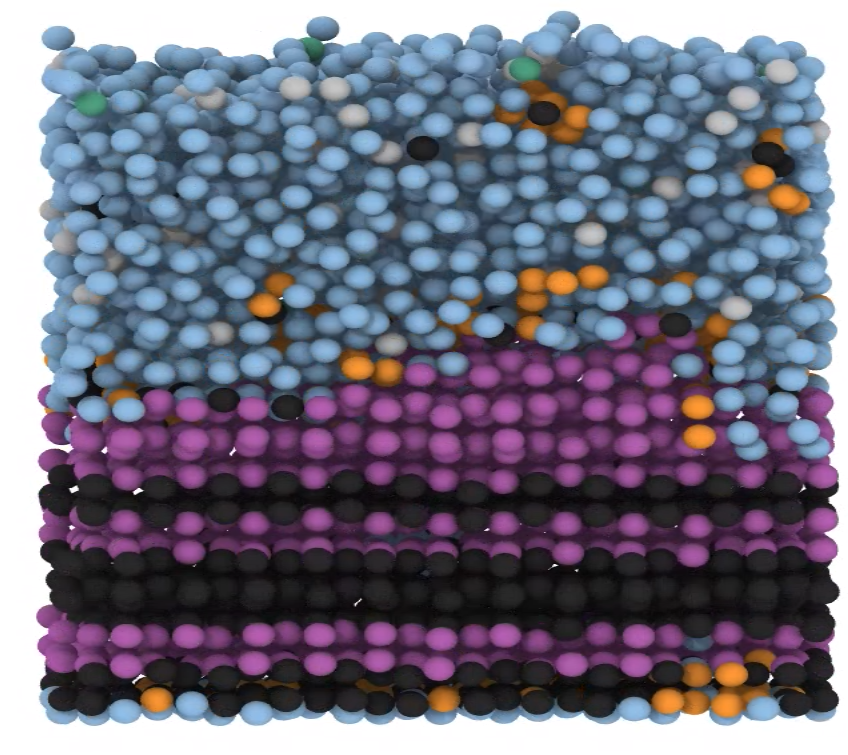
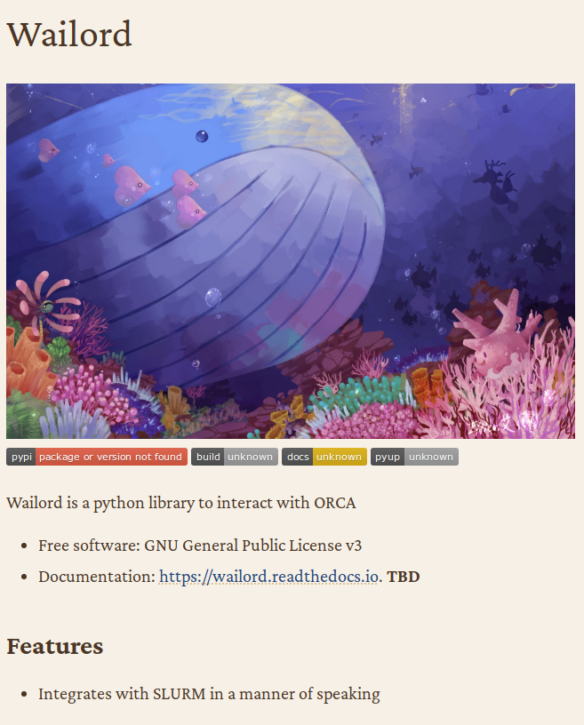
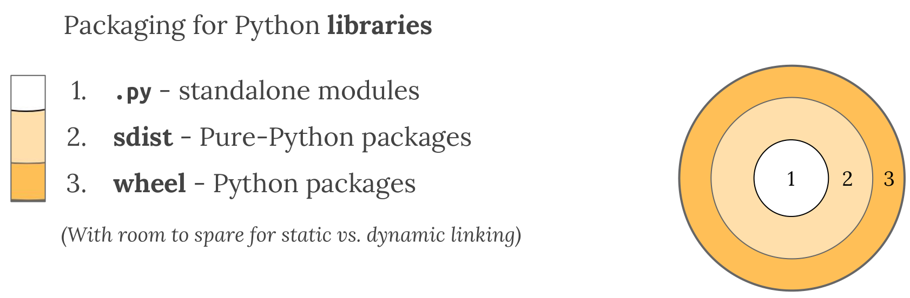
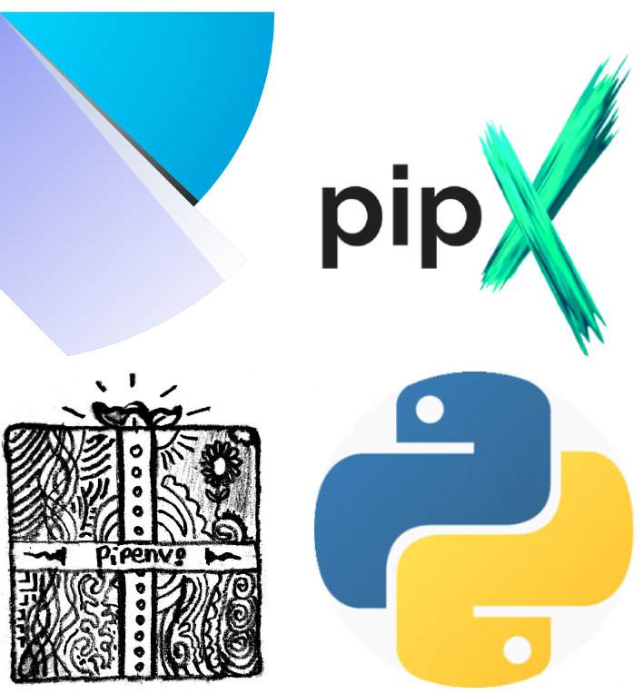
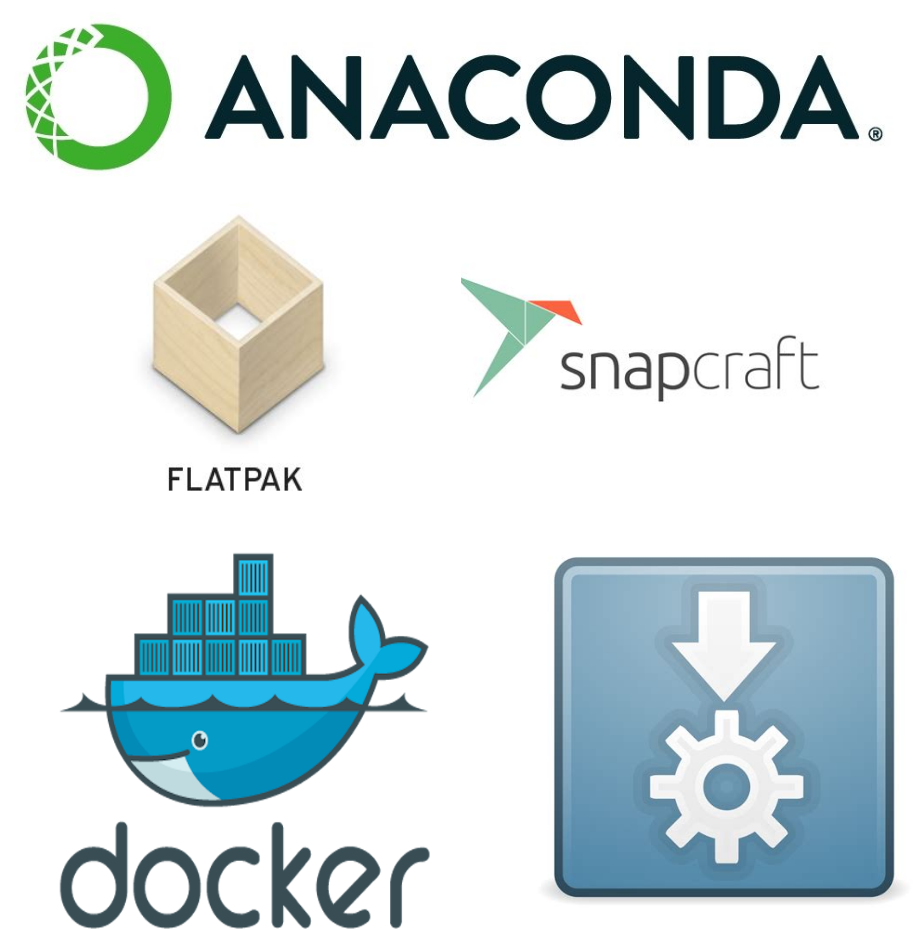
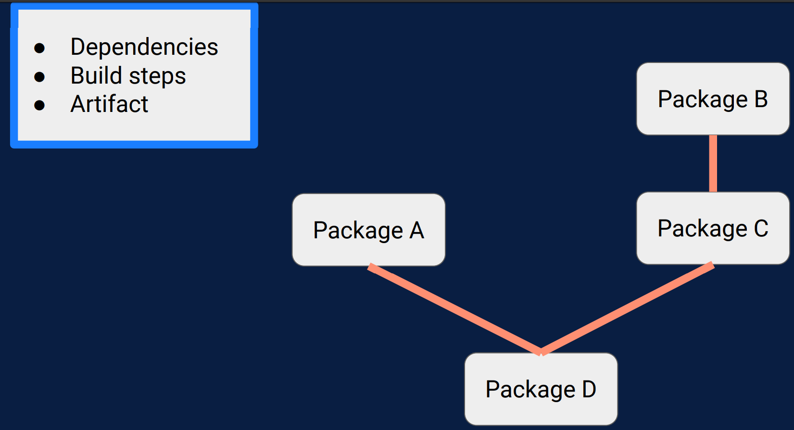
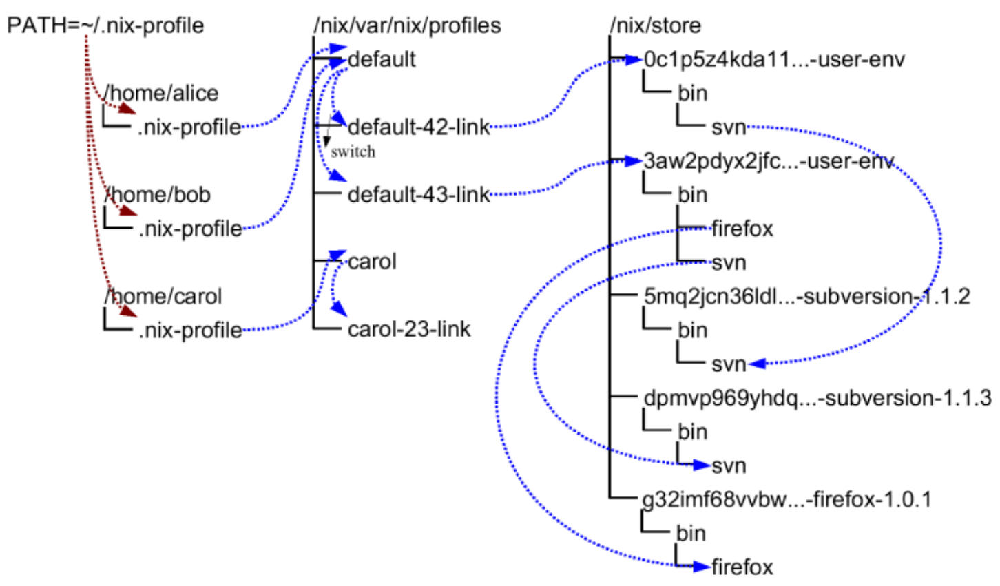
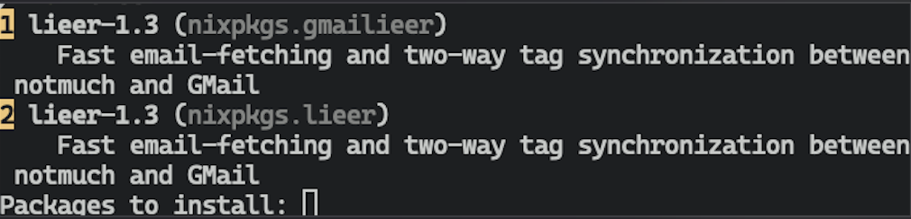
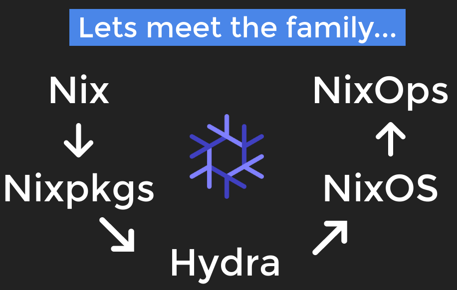

Wrangling Pythons with Nix for Reproducible Purity
Rohit Goswami MInstP
Created: 2021-05-29 Sat 06:49
1 Brief Introduction
1.1 Hello!
- Find me here: https://rgoswami.me
- Who?
- Rohit Goswami MInstP
- Doctoral Researcher, University of Iceland, Faculty of Physical Sciences
- Rohit Goswami MInstP


1.2 About work..

- A good place to work on Water!!
- Image from (Goswami, Goswami, and Singh, n.d.)
1.3 Logistics
- All contents are hosted on GitHub
- Questions are welcome after / during the lecture
- Email me
- Post on the Ed
- Leave a comment on my site
2 Local Project Layouts
2.1 Language Agnostic Beginnings
Readme.{md,org}- Motivation, rationale, license, installation instructions
LICENSE- Plain text, and preferably an open license
- license-generator is pretty handy for this
.gitignore- Lists files which do not need to be committed; typically generated files
- gibo can be used to generate these
$ git init # Inside project $ gibo macOS Windows Xcode Emacs \ Vim Python C++ \ CMake TeX > .gitignore $ touch readme.md $ license-generator MIT \ --author "Person" $ tree -L 2 . ├── LICENSE ├── docs │ └── pres └── readme.org 2 directories, 2 files
2.2 Python PyPI Standard
- Write functions/objects
- Refactor into modules
- Tests
- Fuzzy (property based,
hypothesis) - Unit / Integration (
pytest)
- Fuzzy (property based,
- Documentation
- Push to PyPI

2.2.1 Example: Wailord

$ tree -L 1 . ├── AUTHORS.rst ├── CODEOWNERS ├── CONTRIBUTING.rst ├── HISTORY.rst ├── LICENSE ├── MANIFEST.in ├── Makefile ├── README.rst ├── docs ├── poetry.lock ├── pyproject.toml ├── tests ├── wailord └── wailord_templates 5 directories, 15 files
3 Packaging
3.1 Python Modules
- A
.pyfile is a module - It is standalone if it only imports from the standard library
from collections import namedtuple point_xy = namedtuple('point_xy', ('x', 'y'))
3.2 Pure Python Packages
- A directory with
__init__.pyin it is a package - Use
pip
"""Top-level package for Wailord.""" __author__ = """Rohit Goswami""" __email__ = "rog32@hi.is" __version__ = "0.0.2"
3.3 Distributions
Standard
- Built by
setuptoolswithsetup.py - Simple source only
.tar.gz
Binary
wheel
- For interoperable needs (sometimes!)
- Includes static libraries
- Distributions have zero or more packages
3.4 The Python Gradient

- Libraries and Dev tools are all we get (from PyPI)
3.5 Pip Requirements
- Python
- System libraries
- Build tools
- Wheels don’t work for arbitrary distributions
4 Dependency Resolution
requirements.txt(pip)
- Poetry (pretty)
pyproject.toml
poetry.lock
- Pipenv (older)
Pipfile+ lockfile
- Pipx (
pipbut for applications)
- Pyenv and friends

4.1 System Dependencies
- Appimages
- Containers
docker,flatpak,snapcraft
- Impure filesystems
- Anaconda

5 Nix
5.1 Current Scenario Summary

Pythonpoetry,pipenv,pyenvC++conan,vcpkg,cpm
- Nix is the answer!!
5.2 General Workflow

- From here
5.3 Details
(Dolstra, Jonge, and Visser, n.d.; Dolstra, Löh, and Pierron, n.d.)

- User environments (from the manual)
5.4 Rationale
Protects against self harm
Exposes things taken for granted
Enforces consistency
- Reliable
- Purely functional, no broken dependencies
- Reproducible
- Each package is in isolation
- How?
- store + hash + name + version
6 Using Nix
6.1 Installation (Multi-User)
sh <(curl https://nixos.org/nix/install) --daemon
- Needs
sudobut should not be run as root - Will make build users with IDs between 30001 and 30032 along with a group ID 30000
6.2 Nix Python - Trial I
nix-shell -p 'python38.withPackages(ps: with ps; [ numpy toolz ])'
- Check which
pythonis loaded - Check which modules are present
- Check if passing
-pmultiple times is allowed
6.3 Nix with Scripts
#! /usr/bin/env nix-shell #! nix-shell -i python3 -p "python3.withPackages(ps: [ps.numpy])" import numpy print(numpy.__version__)
chmod +x nixnp.sh
./nixnp.sh
6.3.1 Example: Astroid Poll
#!/usr/bin/env nix-shell #!nix-shell -i python3 -p "python38.withPackages(ps: [ ps.sh ])" -p lieer from pathlib import Path import sh # For generic IMAP maildirs ISYNC_LABELS = ["rog32"] for isync in ISYNC_LABELS: sh.mbsync("-V",isync,_bg=True) # Gmaileer GMAIL_IDENTIFIERS = ["gmail", "ieee"] path = Path(r"/mail/") for dirs in path.iterdir(): if dirs.is_dir(): for gmi in GMAIL_IDENTIFIERS: if gmi in dirs.name: print(f"Syncing {dirs.name}") sh.gmi("sync", _cwd=dirs, _fg=True)
6.4 Purity
nix-shell -p python36 --pure
- Why?
- What do we solve with this?

Figure 13: Stateless builds from https://slides.com/garbas/mozilla-all-hands-london-2016#/7/0/3
6.5 Shell in a File
with import <nixpkgs> {}; let pythonEnv = python35.withPackages (ps: [ ps.numpy ps.toolz ]); in mkShell { buildInputs = [ pythonEnv which ];}
- What tools are we adding?
- What environment are we using?
6.6 Nix Python Expressions I
f90wrap = self.buildPythonPackage rec { pname = "f90wrap"; version = "0.2.3"; src = pkgs.fetchFromGitHub { owner = "jameskermode"; repo = "f90wrap"; rev = "master"; sha256 = "0d06nal4xzg8vv6sjdbmg2n88a8h8df5ajam72445mhzk08yin23"; }; buildInputs = with pkgs; [ gfortran stdenv ];
- The self portion is from overriding the python environment
- We will dispense with this later
6.7 Nix Python Expressions II
propagatedBuildInputs = with self; [ setuptools setuptools-git wheel numpy ]; preConfigure = '' export F90=${pkgs.gfortran}/bin/gfortran ''; doCheck = false; doInstallCheck = false; };
- More details here: https://rgoswami.me/posts/ccon-tut-nix/
propagatedBuildInputsare for the python packages
6.8 Friendly Nix
nix-env -i nox nox lieer

- Niv
- For pinning packages
- Nox
- Interactive package management
- Lorri
- For automatically reloading environments
- Mach-Nix
- For working with Python
6.9 Pinning Nixpkgs
niv init
{
"nixpkgs": {
"branch": "release-20.03",
"description": "Nix Packages collection",
"homepage": "",
"owner": "NixOS",
"repo": "nixpkgs",
"rev": "1db42b7fe3878f3f5f7a4f2dc210772fd080e205",
"sha256": "05k9y9ki6jhaqdhycnidnk5zrdzsdammbk5lsmsbz249hjhhgcgh",
"type": "tarball",
"url": "https://github.com/NixOS/nixpkgs/archive/.tar.gz",
"url_template": "https://github.com/<owner>/<repo>/archive/<rev>.tar.gz"
}
}
7 Replacing Conda
7.1 I: Variables
let sources = import ./nix/sources.nix; pkgs = import sources.nixpkgs { }; mach-nix = import (builtins.fetchGit { url = "https://github.com/DavHau/mach-nix/"; ref = "refs/tags/3.3.0"; }) { # optionally bring your own nixpkgs pkgs = pkgs; # optionally specify the python version python = "python38"; };
- Note our definition of
mach-nix
- Best practices involve
nivpinned sources
7.2 II: Customizing Python
customPython = mach-nix.mkPython { requirements = builtins.readFile ./requirements.txt; providers = { _default = "nixpkgs,wheel,sdist"; pytest = "nixpkgs"; }; pkgs = pkgs; }; in pkgs.mkShell { buildInputs = with pkgs; [ customPython ]; }
overrides_pre = [ (pythonSelf: pythonSuper: { pytest = pythonSuper.pytest.overrideAttrs (oldAttrs: { doCheck = false; }); f90wrap = pythonSelf.buildPythonPackage rec {...}; }) ];
- More details here: https://rgoswami.me/posts/mach-nix-niv-python/
8 Testing and Continuous Integration
8.1 Testing Frameworks
Pythonhas great testing frameworkspytest,hypothesis, etc.
- Unit tests are the first layer
- Ensure each function outputs as expected
- Integration tests are for workflows
- Ensure each series of tasks connect correctly
[tool.poetry.dev-dependencies] check-manifest = "*" pytest = "^4.6" pytest-datadir = "^1.3.1"
@pytest.fixture(scope="session") def mult_xyz(tmpdir_factory): """Copies folders and fixes input file paths""" dat = tmpdir_factory.mktemp("data") shutil.copytree(DATADIR, dat, dirs_exist_ok=True) with open(f"{dat}/orcaMultxyz.yml") as mxyz: t = yaml.full_load(mxyz) t["xyz"] = f"{dat}/{t['xyz']}" fn = Path(dat / "omult.yml") fn.write_text(yaml.dump(t)) return fn
. tree -L 2 . ├── basejob.sh ├── expmult.yml ├── orcaMultxyz.yml └── xyzdat ├── ch3.xyz ├── ch3oh_dimer.xyz ├── ch3oh_single.xyz └── h2inp.xyz 1 directory, 7 files
8.2 Continuous Integration
- No one likes switching computers to test
- MacOS, Windows (WSL often), Many Linux distributions
- Some tests run for a long time
- Less attractive locally
nixpkgscan take over a day!
- Less attractive locally
- There are far too many options nowadays
- Wercker,
Travis CI, Shippable, GitLab CI, Github Actions
- Wercker,
- Mostly transient
dockerornixbased systems- Setup can be annoying without
nix
- Setup can be annoying without
8.3 Github Actions
- act allows local tests
name: Test theme on: push: branches: [src] pull_request: branches: [src] # every day https://crontab.guru/ schedule: - cron: "0 0 * * *" jobs: deploy: runs-on: ubuntu-latest
steps: - uses: actions/checkout@v2 - uses: cachix/install-nix-action@v12 with: nix_path: nixpkgs=channel:nixos-unstable - name: Get and initialize binary cache run: | nix-env -iA cachix -f \ https://cachix.org/api/v1/install cachix use hello-friend-ng-hz - name: Test Build run: nix-shell --run \ "hugo -s exampleSite --themesDir=../.." - name: Cache Nix Results env: authToken: ${{ secrets.CACHIX_AUTH_TOKEN }} cachixName: hello-friend-ng-hz run: | cachix authtoken $authToken nix-store -qR \ --include-outputs $(nix-instantiate shell.nix) \ | cachix push $cachixName
9 Conclusions
9.1 Omitted Topics
- NUR
- Nix user repository for custom packages
- Nix and HPC systems
socatmadness
- Nix Flakes
- Standardizing
niv

9.2 Further Resources
- My Nix Posts
- I write about
nixpretty often- For websites
- For documentation
- For languages
- Nix Pills
- An introduction to the expression language
- Introductory Flakes
- The future of standard
nixpkgs
10 The End
10.1 Thanks!
11 References
Dolstra, Eelco, Merijn de Jonge, and Eelco Visser. n.d. “Nix: A Safe and Policy-Free System for Software Deployment,” 15.
Dolstra, Eelco, Andres Löh, and Nicolas Pierron. n.d. “NixOS: A Purely Functional Linux Distribution” 20 (5-6):577–615.
Goswami, Rohit, Amrita Goswami, and Jayant K. Singh. n.d. “D-SEAMS: Deferred Structural Elucidation Analysis for Molecular Simulations” 60 (4):2169–77.
Wrangling Pythons with Nix for Reproducible Purity Rohit Goswami MInstP Created: 2021-05-29 Sat 06:49